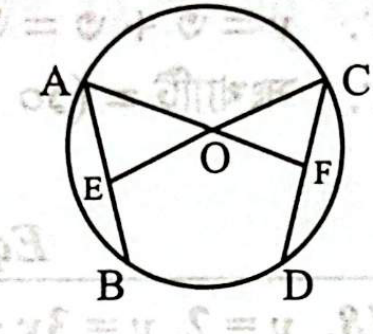
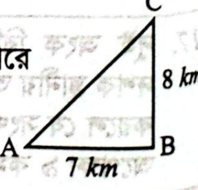

সহকারী পরিচালক (Assistant Director)
Noto Serif Bengali
০১. প্রবন্ধ রচনা করুন: "ব্যক্তিত্ব বিকাশে গ্রন্থ পাঠের ভূমিকা"
ভূমিকা: মানুষের চিন্তা, মনন ও চরিত্র গঠনের সবচেয়ে শক্তিশালী মাধ্যম হলো বই। বই মানুষকে শুধু তথ্য দেয় না, বরং শেখায় কীভাবে ভাবতে হয়, বিচার-বিশ্লেষণ করতে হয় এবং সঠিক সিদ্ধান্ত নিতে হয়। একটি ভালো বই মানুষের ভেতরের সুপ্ত সম্ভাবনাকে জাগ্রত করে এবং দৃষ্টিভঙ্গির দিগন্ত প্রসারিত করে। তাই মানব ব্যক্তিত্বের সামগ্রিক ও ভারসাম্যপূর্ণ বিকাশে গ্রন্থ পাঠের ভূমিকা অনন্য ও অনস্বীকার্য।
গ্রন্থ পাঠ ও জ্ঞানের বিস্তার: ব্যক্তিত্বের প্রথম স্তম্ভ হলো জ্ঞান। জ্ঞান ছাড়া আত্মবিশ্বাস, যুক্তিবোধ ও প্রাজ্ঞতা অর্জন সম্ভব নয়। বই হলো স্থান ও কালের সীমানা অতিক্রমকারী চিরন্তন জ্ঞানভাণ্ডার। ইতিহাসের অভিজ্ঞতা, বিজ্ঞানের আবিষ্কার, দার্শনিকের চিন্তা ও সাহিত্যের মানবিক অনুভবে অবগাহন করে পাঠক নিজের মননশীলতাকে শাণিত করতে পারেন।
চিন্তাশক্তি ও বিশ্লেষণধর্মী মনন গঠন: গ্রন্থ পাঠ মানুষের চিন্তাকে মুক্ত ও গভীর করে। ক্লাসিক সাহিত্য, দর্শন ও মনোবিজ্ঞানমূলক গ্রন্থ মানবজীবনের জটিল দ্বন্দ্ব, নৈতিক সংকট ও মানবিক মূল্যবোধ গভীরভাবে বুঝতে সাহায্য করে। নিয়মিত বই পড়ার অভ্যাস মানুষকে গতানুগতিক অন্ধ অনুকরণের বদলে নিজস্ব স্বাধীন দৃষ্টিভঙ্গি ও যৌক্তিক মননে সমৃদ্ধ করে।
নৈতিক মূল্যবোধ ও আত্মোপলব্ধি: ধর্মীয় ও আধ্যাত্মিক গ্রন্থ মানুষের মধ্যে সত্যবাদিতা, ন্যায়পরায়ণতা ও আত্মসংযমের শিক্ষা দেয়। জীবনী ও সাহিত্যের আদর্শ চরিত্রগুলো পাঠকের মনে পরোপকার, মমত্ববোধ ও অন্যায়ের বিরুদ্ধে প্রতিবাদী চেতনা জাগ্রত করে। স্টিফেন কোভির 'The 7 Habits of Highly Effective People' কিংবা রবীন্দ্রনাথের 'আত্মপরিচয়' এর মতো গ্রন্থগুলো মানুষকে নিজের শক্তি ও দুর্বলতা চিনে আত্মউন্নয়নে উদ্বুদ্ধ করে।
সামাজিক সচেতনতা ও পরমতসহিষ্ণুতা: কেবল নিজেকে জানলেই ব্যক্তিত্ব পূর্ণ হয় না; অন্য জাতি, সংস্কৃতি ও জীবনধারাকে শ্রদ্ধার চোখে দেখার ঔদার্যও প্রয়োজন। গ্রন্থ পাঠ মানুষের মন থেকে কূপমণ্ডূকতা, অন্ধ কুসংস্কার ও অহংকার দূর করে পরমতসহিষ্ণুতা ও বিশ্বজনীন দৃষ্টিভঙ্গি গড়ে তোলে।
উপসংহার: ডিজিটাল বিনোদনের বাহুল্যময় এই যুগে বই পড়ার অভ্যাস রক্ষা করা ব্যক্তিত্বের ভারসাম্য বজায় রাখার জন্য সবচেয়ে জরুরি অনুশীলন। বই মানুষের নিঃসঙ্গতার শ্রেষ্ঠ সঙ্গী এবং সুশৃঙ্খল, মার্জিত ও মানবিক ব্যক্তিত্ব গঠনের শ্রেষ্ঠ কারিগর।
০২. সারাংশ লিখুন:
সৌন্দর্যপিপাসু মানুষ প্রায়শই বিপুল অর্থ ও শ্রম ব্যয় করে দূরের সমুদ্র ও পর্বতমালার সৌন্দর্য দর্শনে ব্যাকুল হয়। অথচ অন্তর্দৃষ্টির অভাবে সে খেয়াল করে না যে, তার অতি নিকটের সামান্য একটি ধানের শিষের ওপর জমে থাকা শিশিরবিন্দুতেও বিধাতার অনির্বচনীয় ও অপার্থিব রূপ-লাবণ্য বিদ্যমান।
০৩. জেন-জি (Gen-Z) সম্পর্কে আপনার পিতাকে অবহিত করার জন্য একটি পত্র লিখুন।
মিরপুর-১০, ঢাকা
০৭.০৭.২০২৬
শ্রদ্ধেয় বাবা,
আমার সশ্রদ্ধ সালাম গ্রহণ করবেন। আশা করি আপনি ও মা পরম করুণাময়ের কৃপায় ভালো আছেন। আমি ঢাকায় পড়াশোনা নিয়ে নিয়মিত ব্যস্ত আছি। সম্প্রতি সমাজ ও গণমাধ্যমে বহুল আলোচিত 'জেন-জি' (Generation Z) ধারণাটি সম্পর্কে আপনাকে কিছু অবহিত করার তাগিদ থেকেই আজকের এই চিঠি।
বাবা, সমাজবিজ্ঞানীদের পরিভাষায় ১৯৯৭ থেকে ২০১২ সালের মধ্যে জন্মগ্রহণকারী প্রজন্মকে 'জেন-জি' বলা হয়। এরা মানব ইতিহাসের প্রথম 'ডিজিটাল নেটিভ' (Digital Native) প্রজন্ম—অর্থাৎ এদের শৈশব ও বেড়ে ওঠা সরাসরি ইন্টারনেট, স্মার্টফোন ও সোশ্যাল মিডিয়ার সান্নিধ্যে ঘটেছে। পূর্ববর্তী প্রজন্মের তুলনায় এদের তথ্যপ্রাপ্তি ও যোগাযোগ অত্যন্ত দ্রুতগতির। এই প্রজন্মের অন্যতম বৈশিষ্ট্য হলো এরা তীব্র আত্মমর্যাদাবোধসম্পন্ন, গড্ডলিকা প্রবাহে গা না ভাসিয়ে নতুনত্ব ও স্বাধীন পেশা পছন্দ করে, পরিবেশ রক্ষা ও সামাজিক ন্যায়বিচারের প্রশ্নে আপসহীন এবং তথ্যের সত্যতা যাচাইয়ে অত্যন্ত পারদর্শী। চব্বিশের ঐতিহাসিক ছাত্র-জনতার অভ্যুত্থানেও এই জেন-জি তরুণদের অকুতোভয় দেশপ্রেম ও আত্মত্যাগ বিশ্বকে বিস্মিত করেছে।
বাবা, আপনাদের সময়ের মতো আমাদের মধ্যেও দেশ ও সমাজের প্রতি ভালোবাসা কোনো অংশে কম নয়, কেবল আমাদের কাজের ধরন ও দৃষ্টিভঙ্গি আধুনিক প্রযুক্তিনির্ভর। আপনার দোয়া থাকলে আমি যেন সততা ও নিষ্ঠার সাথে নিজেকে একজন আদর্শ মানুষ ও দেশপ্রেমিক নাগরিক হিসেবে গড়ে তুলতে পারি। মা ও ছোটদের আমার ভালোবাসা দেবেন।
আপনার স্নেহভাজন পুত্র,
রহিম
০৪. বাংলায় অনুবাদ করুন:
মানুষ একা বসবাস করতে পারে না। তাই সে সঙ্গী ভালোবাসে ও দলবদ্ধ থাকতে পছন্দ করে। অপরের সাহায্য ছাড়া মানুষ একটি দিনও চলতে পারে না। এই কারণেই সুদূর প্রাচীনকাল থেকেই মানুষ একত্রে পারস্পরিক সহযোগিতার ভিত্তিতে বসবাস করে আসছে। একেই বলে সামাজিক জীবন।
০৫. নিচের ব্যাকরণিক প্রশ্নগুলোর উত্তর দিন (ক, খ ও গ):
ক) 'চন্দ্র' শব্দের পাঁচটি সমার্থক শব্দ লিখুন।
খ) অর্থসহ বাক্য গঠন করুন: i) চুনোপুঁটি ii) গোঁয়ার গোবিন্দ iii) আঙুল ফুলে কলাগাছ iv) বিদুরের খুদ v) হাতের পাঁচ
গ) বাক্য সংকোচন করুন: i) একই মায়ের সন্তান ii) উপকারীর উপকার স্বীকার করে যে iii) বিনা কাজে সর্বত্র ঘুরে বেড়ায় যে iv) শুভক্ষণে জন্ম যার v) অন্য গাছের ওপর জন্মে যে গাছ
চাঁদ, শশী, সুধাংশু, বিধু, হিমাংশু (এছাড়াও: সোম, নিশাকর, সুধাকর, শশাঙ্ক, ইন্দু)।
| বাগধারা | অর্থ | সার্থক বাক্য |
|---|---|---|
| i) চুনোপুঁটি | নগণ্য বা সাধারণ ব্যক্তি | সিন্ডিকেটের মূল হোতারা পার পেয়ে গেলেও কেবল চুনোপুঁটিরা ধরা পড়েছে। |
| ii) গোঁয়ার গোবিন্দ | নির্বোধ অথচ হঠকারী | তাকে কোনো দায়িত্ব দিও না, সে একরোখা ও গোঁয়ার গোবিন্দ প্রকৃতির লোক। |
| iii) আঙুল ফুলে কলাগাছ | হঠাৎ অন্যায়ভাবে ধনী হওয়া | ঘুষের টাকায় রাতারাতি আঙুল ফুলে কলাগাছ হয়ে সে অহংকারে মাটিতে পা ফেলছে না। |
| iv) বিদুরের খুদ | ভক্তিভরে প্রদত্ত সামান্য উপহার | গরিবের এই সামান্য তোহফা বিদুরের খুদ মনে করে সাদরে গ্রহণ করুন। |
| v) হাতের পাঁচ | শেষ সম্বল | হাতের পাঁচ জমানো টাকা কটাও চিকিৎসার পেছনে শেষ হয়ে গেল। |
| বাক্যাংশ | এক কথায় প্রকাশ |
|---|---|
| i) একই মায়ের সন্তান | সহোদর |
| ii) উপকারীর উপকার স্বীকার করে যে | কৃতজ্ঞ |
| iii) বিনা কাজে সর্বত্র ঘুরে বেড়ায় যে | বাউন্ডুলে (বা যাযাবর) |
| iv) শুভক্ষণে জন্ম যার | ক্ষণজন্মা |
| v) অন্য গাছের ওপর জন্মে যে গাছ | পরগাছা |
০৬. Write an essay on 'Problems of Unemployed Graduates in Bangladesh' using the hints given below:
[Current scenario of the problem • Causes • Bad impacts of unemployment • Potential solution • Conclusion]
Introduction & Current Scenario: Youth unemployment, particularly among educated university graduates, has emerged as one of the most alarming socioeconomic challenges in contemporary Bangladesh. Every year, hundreds of thousands of ambitious youths graduate from public and private universities and colleges with high hopes of securing decent white-collar employment. However, official statistics from BIDS and the BBS Labor Force Survey reveal that the unemployment rate among tertiary-educated youths hovers around 30 to 40 percent—substantially higher than the national overall unemployment rate.
Key Causes: Several structural factors contribute to this crisis. Firstly, there is a severe mismatch between traditional higher education curricula and market-driven skills required by modern industries. Our academic institutions predominantly focus on theoretical rote-learning rather than analytical, technical, ICT, and soft-skill development. Secondly, private sector industrialization and formal job creation have failed to keep pace with the massive expansion of university graduates. Thirdly, the excessive obsession with government BCS jobs leads youths to spend years unproductive in coaching centers. Finally, recruitment irregularities, nepotism, and lack of institutional career counseling exacerbate the predicament.
Bad Impacts: Prolonged educated unemployment breeds psychological distress, chronic depression, and frustration among youth, eroding their self-esteem. In severe cases, it fuels social unrest, substance abuse, and brain drain, as talented youths desperately seek opportunities abroad. Economically, youth unemployment represents a colossal wastage of precious human capital during Bangladesh's demographic dividend window, placing severe financial strain on elderly parents.
Potential Solutions: Rectifying this crisis requires a coordinated policy approach. Higher education must undergo sweeping curriculum overhauls emphasizing STEM, 4IR technologies, data literacy, and vocational competencies. Universities must establish functional industry-academia linkages and apprenticeship programs. The government should stimulate self-employment and entrepreneurial startups by offering collateral-free low-interest seed capital, tax incentives, and streamlined trade licensing. Furthermore, recruitment systems must be meritocratic, transparent, and prompt.
Conclusion: Bangladesh's youth are the architect of its economic future. Transforming our educated youth from job-seekers into innovative job-creators through practical skill development is the only viable path to achieving sustainable prosperity and social peace.
০৭. Write an application to a commercial bank for introducing agent banking service in your locality.
10.07.2026
To
The Branch Manager
Bangladesh Krishi Bank / Sonali Bank PLC
Nalchity Branch, Jhalakati.
Subject: Application for introducing agent banking service in our locality.
Dear Sir,
With due respect, I would like to draw your kind attention to the fact that our locality, Subidpur Union under Nalchity Upazila, is a densely populated rural area where most residents are smallholders, farmers, local traders, and expatriate beneficiary families. Unfortunately, there is no formal commercial bank branch within a radius of eight kilometers.
Consequently, local people face severe inconvenience and security hazards in traveling to the distant upazila town for basic banking transactions such as cash deposits, withdrawals, foreign remittance disbursement, and utility bill payments. Establishing an Agent Banking outlet in our local bazaar will provide affordable financial inclusion at their doorstep, encourage rural savings, mobilize deposits, and significantly empower local small enterprises.
Under these circumstances, I earnestly request you to take the necessary institutional steps to establish an Agent Banking outlet in our locality at an early date, for which the local community shall remain grateful.
Sincerely yours,
Arafat Hossain
On behalf of the residents of Subidpur, Nalchity, Jhalakati.
Contact: 01700000000
০৮. Read the following passage carefully and answer the questions that follow in your own words:
Questions:
Answers:
a) Upon hearing about Bartley's decision to visit the Gateway fair, Maurya becomes extremely agitated, loses her temper, and desperately pleads with him not to go because a deadly storm is imminent and Michael's body may soon require a funeral coffin.
b) From the passage, Bartley appears resolute, duty-conscious, yet stubborn and heedless of his mother's premonitions. He is determined to fulfill his financial family obligations even at the risk of turbulent seas.
c) In the final sentence, Maurya expresses her deep, haunting agony and tragic premonition by grimly reminding Bartley that his deceased brother Michael had also similarly departed into the merciless ocean, leaving her behind forever.
d) Sentence making:
e) Sentence completion:
০৯. Define with examples:
১০. Make sentences to show the difference in meaning of the following pairs:
| Word | Meaning (অর্থ) | Illustrative Sentence |
|---|---|---|
| Prescribe | ব্যবস্থাপত্র দেওয়া / পরামর্শ দেওয়া | The doctor prescribed antibiotics for my throat infection. |
| Proscribe | বেআইনি বা নিষিদ্ধ ঘোষণা করা | The government decided to proscribe the extremist militant organization. |
| Property | সম্পত্তি / ভূসম্পত্তি | This ancestral house is my grandfather's property. |
| Propriety | শিষ্টাচার / সমীচীনতা | She questioned the propriety of his inappropriate remark during the formal meeting. |
| Morale | মনোবল / মানসিক উদ্দীপনা | High morale among the troops is vital for winning the battle. |
| Moral | নৈতিক / নীতিবান | A person of high moral values is respected universally. |
| Heal | আরোগ্য লাভ করা / নিরাময় হওয়া | Time can heal even the deepest emotional wounds. |
| Heel | পায়ের গোড়ালি | Achilles had a vulnerable spot on his right heel. |
| Elder | পরিবারের জ্যেষ্ঠ ব্যক্তি | My elder sister is a dedicated physician. (ব্যবহৃত হয় রক্তের সম্পর্কে)। |
| Older | বয়সে বড় (যেকোনো ব্যক্তি/বস্তু) | This ancient banyan tree is much older than the school building. |
১১. Correct the following sentences:
| Given Sentence | Corrected Sentence | Correction Details |
|---|---|---|
| a) Every boy must sigh in when they arrive. | Every boy must sign in when he arrives. | 'sigh in' বানানের স্থলে 'sign in'; 'Every boy' singular antecedent হওয়ায় pronoun 'he' এবং verb 'arrives' হবে। |
| b) It was a real nice day today. | It is really a nice day today. (or It was a very nice day) | Adjective 'nice'-কে modify করতে adverb 'really' বা 'very' বসে। |
| c) I ran quick to the bus stop. | I ran quickly to the bus stop. | Verb 'ran'-কে modify করতে adverbial form 'quickly' ব্যবহৃত হয়। |
| d) What sort of an insect that is? | What sort of insect is that? | 'Sort of / kind of'-এর পর article 'a/an' বসে না; interrogative-এ auxiliary verb 'is' সাবজেক্টের পূর্বে বসে। |
| e) The train is expected to arrive with time. | The train is expected to arrive on time. | সময়মত পৌঁছানো বোঝাতে সঠিক prepositional phrase হলো 'on time' (বা in time)। |
১২. \(A = \{x : x, 4 \text{ এর গুণিতক এবং } 0 \le x \le 48\}\) এবং \(B = \{x : x, 48 \text{ এর গুণনীয়ক}\}\)।
\(A\) ও \(B\) সেট হতে \((A \cap B)\), \((A \cup B)\), \((A' \cap B)\) এর মান নির্ণয় করুন।
সমাধান:
শর্তানুযায়ী, \(0 \le x \le 48\) সীমার মধ্যে ৪ এর স্বাভাবিক গুণিতকসমূহ:
\(A = \{4, 8, 12, 16, 20, 24, 28, 32, 36, 40, 44, 48\}\)
৪৮ এর গুণনীয়কসমূহ (\(48 = 1 \times 48 = 2 \times 24 = 3 \times 16 = 4 \times 12 = 6 \times 8\)):
\(B = \{1, 2, 3, 4, 6, 8, 12, 16, 24, 48\}\)
i) \((A \cap B)\) নির্ণয়:
\(A \cap B = \{4, 8, 12, 16, 20, 24, 28, 32, 36, 40, 44, 48\} \cap \{1, 2, 3, 4, 6, 8, 12, 16, 24, 48\}\)
∴ \(A \cap B = \{4, 8, 12, 16, 24, 48\}\)
ii) \((A \cup B)\) নির্ণয়:
∴ \(A \cup B = \{1, 2, 3, 4, 6, 8, 12, 16, 20, 24, 28, 32, 36, 40, 44, 48\}\)
iii) \((A' \cap B)\) নির্ণয়:
সার্বিক সেট \(U = A \cup B\) বিবেচনা করলে, \(A' = U \setminus A = \{1, 2, 3, 6\}\)
∴ \(A' \cap B = \{1, 2, 3, 6\} \cap B = \{1, 2, 3, 6\}\)
১৩. দুই জন কর্মকর্তার মাসিক বেতনের যোগফল ২,০০,০০০ টাকা। একজন কর্মকর্তার বেতন ১৫% বৃদ্ধি পেলে যত টাকা হয় অপর জনের বেতন ১৫% হ্রাস পেলে ঠিক তত টাকা হয়। দুই জনের আলাদা ভাবে মাসিক বেতন কত টাকা হবে?
সমাধান:
ধরি, ১ম কর্মকর্তার বেতন \(x\) টাকা এবং ২য় কর্মকর্তার বেতন \(y\) টাকা।
\(x + y = 2,00,000\) ... (i)
১ম কর্মকর্তার বেতন ১৫% বৃদ্ধি পেলে হয় \(= x + ১৫\%x = \frac{115x}{100}\) টাকা
২য় কর্মকর্তার বেতন ১৫% হ্রাস পেলে হয় \(= y - ১৫\%y = \frac{85y}{100}\) টাকা
প্রশ্নমতে,
\(\frac{115x}{100} = \frac{85y}{100}\)
⇒ \(115x = 85y \Rightarrow x = \frac{85y}{115} = \frac{17y}{23}\)
সমীকরণ (i)-এ \(x\)-এর মান বসিয়ে পাই:
\(\frac{17y}{23} + y = 2,00,000\)
⇒ \(\frac{40y}{23} = 2,00,000\)
⇒ \(y = \frac{2,00,000 \times 23}{40} = 5,000 \times 23 = 1,15,000\) টাকা।
অতএব, \(x = 2,00,000 - 1,15,000 = 85,000\) টাকা।
∴ ১ম কর্মকর্তার মাসিক বেতন ৮৫,০০০ টাকা এবং ২য় কর্মকর্তার মাসিক বেতন ১,১৫,০০০ টাকা।
উত্তর: ৮৫,০০০ টাকা ও ১,১৫,০০০ টাকা
১৪. পরপর তিনটি বিজোড় সংখ্যার প্রথমটির এক পঞ্চমাংশ এবং দ্বিতীয়টির এক তৃতীয়াংশের যোগফলের দ্বিগুণ, তৃতীয় সংখ্যাটির এক কম হলে সংখ্যা তিনটি বাহির করুন।
সমাধান:
ধরি, পরপর তিনটি বিজোড় সংখ্যা যথাক্রমে \((x - 2), x, (x + 2)\)।
প্রশ্নমতে,
\(2 \left(\frac{x - 2}{5} + \frac{x}{3}\right) = (x + 2) - 1\)
⇒ \(2 \left(\frac{3(x - 2) + 5x}{15}\right) = x + 1\)
⇒ \(2 \left(\frac{3x - 6 + 5x}{15}\right) = x + 1\)
⇒ \(2(8x - 6) = 15(x + 1)\)
⇒ \(16x - 12 = 15x + 15\)
⇒ \(16x - 15x = 15 + 12\)
∴ \(x = 27\)
অতএব সংখ্যা তিনটি হলো:
১ম সংখ্যা \(= ২৭ - ২ = ২৫\)
২য় সংখ্যা \(= ২৭\)
৩য় সংখ্যা \(= ২৭ + ২ = ২৯\)
∴ সংখ্যা তিনটি যথাক্রমে ২৫, ২৭ এবং ২৯।
উত্তর: ২৫, ২৭, ২৯
১৫. \(p^4 + \frac{1}{p^4} = 322\) হলে \(p^3 + \frac{1}{p^3}\) এর মান নির্ণয় করুন।
সমাধান:
দেওয়া আছে,
\(p^4 + \frac{1}{p^4} = 322\)
⇒ \(\left(p^2\right)^2 + \left(\frac{1}{p^2}\right)^2 = 322\)
⇒ \(\left(p^2 + \frac{1}{p^2}\right)^2 - 2 \cdot p^2 \cdot \frac{1}{p^2} = 322\)
⇒ \(\left(p^2 + \frac{1}{p^2}\right)^2 = 322 + 2 = 324\)
⇒ \(p^2 + \frac{1}{p^2} = \sqrt{324} = 18\)
⇒ \(\left(p + \frac{1}{p}\right)^2 - 2 \cdot p \cdot \frac{1}{p} = 18\)
⇒ \(\left(p + \frac{1}{p}\right)^2 = 18 + 2 = 20\)
⇒ \(p + \frac{1}{p} = \sqrt{20} = 2\sqrt{5}\)
আমরা জানি,
\(p^3 + \frac{1}{p^3} = \left(p + \frac{1}{p}\right)^3 - 3 \cdot p \cdot \frac{1}{p}\left(p + \frac{1}{p}\right)\)
\(= (2\sqrt{5})^3 - 3(2\sqrt{5})\)
\(= (8 \times 5\sqrt{5}) - 6\sqrt{5} = 40\sqrt{5} - 6\sqrt{5} = 34\sqrt{5}\)
উত্তর: \(34\sqrt{5}\)
১৬. সমাধান করুন (ক ও খ অংশ):
a) \(2x^4 - 3x^3 - 3x - 2\) উৎপাদকে বিশ্লেষণ করুন।
b) সমাধান করুন: \(2^{3x - 5} \times a^{x - 2} = 2^{x - 3} \times 2a^{1 - x}\) যেখানে \(a > 0\) এবং \(a \neq \frac{1}{2}\)
প্রদত্ত রাশি \(= 2x^4 - 3x^3 - 3x - 2\)
\(= 2x^4 - 4x^3 + x^3 - 2x^2 + 2x^2 - 4x + x - 2\)
\(= 2x^3(x - 2) + x^2(x - 2) + 2x(x - 2) + 1(x - 2)\)
\(= (x - 2)(2x^3 + x^2 + 2x + 1)\)
\(= (x - 2)\{x^2(2x + 1) + 1(2x + 1)\}\)
∴ \(= (x - 2)(2x + 1)(x^2 + 1)\)
দেওয়া আছে, \(2^{3x - 5} \times a^{x - 2} = 2^{x - 3} \times 2^1 \times a^{1 - x}\)
⇒ \(2^{3x - 5} \times a^{x - 2} = 2^{x - 2} \times a^{1 - x}\)
⇒ \(\frac{2^{3x - 5}}{2^{x - 2}} = \frac{a^{1 - x}}{a^{x - 2}}\)
⇒ \(2^{(3x - 5) - (x - 2)} = a^{(1 - x) - (x - 2)}\)
⇒ \(2^{2x - 3} = a^{3 - 2x}\)
⇒ \(2^{2x - 3} = a^{-(2x - 3)}\)
⇒ \(2^{2x - 3} = \frac{1}{a^{2x - 3}}\)
⇒ \(2^{2x - 3} \times a^{2x - 3} = 1\)
⇒ \((2a)^{2x - 3} = (2a)^0\)
⇒ \(2x - 3 = 0\)
∴ \(x = \frac{3}{2}\)
উত্তর (b): \(\frac{৩}{২}\)
১৭. দুই অংক বিশিষ্ট কোন সংখ্যার একক স্থানীয় অঙ্কটি দশক স্থানীয় অঙ্ক অপেক্ষা ৩ বেশি। অঙ্কদ্বয় স্থান বিনিময় করলে যে সংখ্যাটি পাওয়া যাবে তা প্রদত্ত সংখ্যার দ্বিগুণ অপেক্ষা ৯ কম। সংখ্যাটি নির্ণয় করুন।
সমাধান:
ধরি, দশক স্থানীয় অঙ্কটি \(x\) এবং একক স্থানীয় অঙ্কটি \(y\)।
∴ মূল সংখ্যাটি \(= 10x + y\)
১ম শর্তমতে,
\(y - x = 3 \Rightarrow y = x + 3\) ... (i)
অঙ্কদ্বয় স্থান বিনিময় করলে নতুন সংখ্যাটি হয় \(= 10y + x\)
২য় শর্তমতে,
\(10y + x = 2(10x + y) - 9\)
⇒ \(10y + x = 20x + 2y - 9\)
⇒ \(8y - 19x = -9\) ... (ii)
সমীকরণ (ii)-তে \(y = x + 3\) বসিয়ে পাই:
\(8(x + 3) - 19x = -9\)
⇒ \(8x + 24 - 19x = -9\)
⇒ \(-11x = -9 - 24 = -33\)
⇒ \(x = \frac{-33}{-11} = 3\)
এখন \(x = 3\) সমীকরণ (i)-এ বসিয়ে পাই:
\(y = 3 + 3 = 6\)
∴ সংখ্যাটি \(= 10(3) + 6 = 30 + 6 = 36\)
উত্তর: ৩৬
১৮. \(y = 2\), \(y = 3x + 4\) এবং \(y = -3x + 10\) রেখা তিনটি দ্বারা গঠিত ত্রিভুজের ক্ষেত্রফল নির্ণয় করুন।
সমাধান:
প্রদত্ত রেখা তিনটি:
\(y = 3x + 4\) ... (i)
\(y = -3x + 10\) ... (ii)
\(y = 2\) ... (iii)
রেখা তিনটির পারস্পরিক ছেদবিন্দুসমূহ নির্ণয়:
(i) ও (ii) হতে পাই: \(3x + 4 = -3x + 10 \Rightarrow 6x = 6 \Rightarrow x = 1\) এবং \(y = 3(1) + 4 = 7\)। ∴ শীর্ষবিন্দু \(A(1, 7)\)।
(ii) ও (iii) হতে পাই: \(2 = -3x + 10 \Rightarrow 3x = 8 \Rightarrow x = \frac{8}{3}\) এবং \(y = 2\)। ∴ শীর্ষবিন্দু \(B\left(\frac{8}{3}, 2\right)\)।
(i) ও (iii) হতে পাই: \(2 = 3x + 4 \Rightarrow 3x = -2 \Rightarrow x = -\frac{2}{3}\) এবং \(y = 2\)। ∴ শীর্ষবিন্দু \(C\left(-\frac{2}{3}, 2\right)\)।
অতএব গঠিত ত্রিভুজ \(\Delta ABC\)-এর ক্ষেত্রফল:
\(\Delta = \frac{1}{2} |x_1(y_2 - y_3) + x_2(y_3 - y_1) + x_3(y_1 - y_2)|\)
\(= \frac{1}{2} \left|1(2 - 2) + \frac{8}{3}(2 - 7) + \left(-\frac{2}{3}\right)(7 - 2)\right|\)
\(= \frac{1}{2} \left|0 + \frac{8}{3}(-5) - \frac{2}{3}(5)\right|\)
\(= \frac{1}{2} \left|-\frac{40}{3} - \frac{10}{3}\right| = \frac{1}{2} \times \frac{50}{3} = \frac{25}{3}\) বর্গ একক।
উত্তর: \(\frac{২৫}{৩}\) বা \(৮\frac{১}{৩}\) বর্গ একক
১৯. প্রমাণ করুন যে, বৃত্তের সকল সমান জ্যা কেন্দ্র হতে সমদূরবর্তী।

বিশেষ নির্বচন: ধরি, \(O\) কেন্দ্রবিশিষ্ট একটি বৃত্তে \(AB\) এবং \(CD\) দুটি সমান জ্যা (অর্থাৎ \(AB = CD\))। প্রমাণ করতে হবে যে, কেন্দ্র \(O\) থেকে \(AB\) এবং \(CD\) জ্যাদ্বয় সমদূরবর্তী।
অঙ্কন: \(O\) থেকে \(AB\) ও \(CD\) জ্যা-এর ওপর যথাক্রমে \(OE \perp AB\) এবং \(OF \perp CD\) লম্ব আঁকি। \(O, A\) এবং \(O, C\) যোগ করি।
প্রমাণ:
২০. নিচের ধারাবাহিকতায় প্রশ্নবোধক স্থানে কি হবে?
T → 3 → Q → 6 → N → 9 → K → 12 → H → 15 → E → 18 → ?
উত্তর: B
ব্যাখ্যা: এখানে দুটি বিকল্প ধারা কাজ করছে:
সুতরাং ১৮-এর পরবর্তী বর্ণটি হবে B।
২১. একটি লম্বা বাঁশ হতে ৩ মিটার একটি খণ্ড কেটে নিতে ২ মিনিট সময় লাগে। বাঁশটিকে সমান ১৭ খণ্ডে বিভক্ত করতে কত মিনিট সময় লাগবে?
সমাধান:
একটি বাঁশকে ১৭টি খণ্ডে বিভক্ত করতে হলে মোট \((১৭ - ১) = ১৬\) বার কাটতে হবে (কারণ শেষ কর্তনে দুটি খণ্ড একসাথে আলাদা হয়)।
প্রতিবার কাটতে সময় লাগে \(= ২\) মিনিট
∴ মোট সময় লাগবে \(= ১৬ \times ২ = ৩২\) মিনিট
উত্তর: ৩২ মিনিট
২২. আজ রবিবার, ৩৪২ দিন পর কি বার হবে?
সমাধান:
প্রতি ৭ দিন পর একই বারের পুনরাবৃত্তি ঘটে।
\(৩৪২ \div ৭ = ৪৮\) (ভাগফল) এবং ভাগশেষ থাকে \(৬\) দিন।
অতএব, ৪৮ সপ্তাহ পর দিনটি হবে রবিবার।
তার পরবর্তী ৬ষ্ঠ দিন হবে: রবিবার + ৬ দিন = শনিবার।
উত্তর: শনিবার
২৩. যদি \(x = 12y\) হয়, তবে \((x - 2y)\), \(x\) এর কত শতাংশ হবে?
সমাধান:
দেওয়া আছে, \(x = 12y\)
প্রদত্ত শতকরা \(= \frac{x - 2y}{x} \times 100\%\)
\(= \frac{12y - 2y}{12y} \times 100\%\)
\(= \frac{10y}{12y} \times 100\% = \frac{5}{6} \times 100\% = \frac{250}{3}\% = 83.33\%\)
উত্তর: \(৮৩.৩৩\%\) (বা \(৮৩\frac{১}{৩}\%\))
২৪. ঘড়িতে যখন সময় ১১.৩০ মিনিট তখন ঘণ্টার কাঁটা ও মিনিটের কাঁটার মধ্যের কোণ কত ডিগ্রী হবে?
সমাধান:
আমরা জানি, ঘণ্টার কাঁটা ও মিনিটের কাঁটার মধ্যবর্তী কোণ:
\(\theta = \left|\frac{60H - 11M}{2}\right|\)
এখানে ঘণ্টা \(H = 11\) এবং মিনিট \(M = 30\)
\(\theta = \left|\frac{60(11) - 11(30)}{2}\right| = \left|\frac{660 - 330}{2}\right| = \frac{330}{2} = 165^\circ\)
উত্তর: ১৬৫°
২৫. নীলা সোজা ৭ কিলোমিটার যাওয়ার পর বাম দিকে ৮ কিলোমিটার গেল। সে স্বল্পতম কত দূরত্ব অতিক্রম করল?

সমাধান:
সোজা যাওয়ার পথ \(AB = 7\text{ km}\) এবং বামে বাঁক নিয়ে যাওয়ার পথ \(BC = 8\text{ km}\)। যেহেতু বাঁকটি সমকোণে (\(90^\circ\)), তাই স্বল্পতম দূরত্ব হবে প্রারম্ভিক ও শেষ বিন্দুর সরলরেখা অর্থাৎ সমকোণী ত্রিভুজের অতিভুজ \(AC\)।
পিথাগোরাসের সূত্রানুসারে:
\(AC = \sqrt{AB^2 + BC^2} = \sqrt{7^2 + 8^2} = \sqrt{49 + 64} = \sqrt{113} \approx 10.63\text{ km}\)
উত্তর: প্রায় ১০.৬৩ কিমি (বা \(\sqrt{১১৩}\) কিমি)
২৬. যদি TOUR দিয়ে 1234, CLEAR দিয়ে 56784, SPARE দিয়ে 90847 বোঝায় তবে CARE দিয়ে কি বোঝাবে?
সমাধান:
বর্ণ ও অঙ্কের সরাসরি ম্যাপিং:
∴ CARE = 5847
উত্তর: ৫৮৪৭
২৭. \(2A = 3B\), \(4B = 5C\) এবং \(5C = 6D\) হলে, \(A : B : C : D =\) ?
সমাধান:
\(2A = 3B \Rightarrow \frac{A}{B} = \frac{3}{2} \Rightarrow A : B = 3 : 2\)
\(4B = 5C \Rightarrow \frac{B}{C} = \frac{5}{4} \Rightarrow B : C = 5 : 4\)
\(5C = 6D \Rightarrow \frac{C}{D} = \frac{6}{5} \Rightarrow C : D = 6 : 5\)
অনুপাতসমূহ ধারাবাহিক করি:
\(A : B = (3 \times 5) : (2 \times 5) = 15 : 10\)
\(B : C = (5 \times 2) : (4 \times 2) = 10 : 8\)
⇒ \(A : B : C = 15 : 10 : 8\)
এবার \(C : D = 6 : 5\) এর সাথে সমন্বয় করি (৮ ও ৬ এর লসাগু ২৪):
\(A : B : C = (15 \times 3) : (10 \times 3) : (8 \times 3) = 45 : 30 : 24\)
\(C : D = (6 \times 4) : (5 \times 4) = 24 : 20\)
∴ \(A : B : C : D = 45 : 30 : 24 : 20\)
উত্তর: ৪৫ : ৩০ : ২৪ : ২০
২৮. কোন সংখ্যার এক দশমাংশের সাথে এক পঞ্চমাংশ যোগ করলে যোগফল 15 হয়। সংখ্যাটি কত?
সমাধান:
ধরি, সংখ্যাটি \(x\)।
প্রশ্নমতে, \(\frac{x}{10} + \frac{x}{5} = 15\)
⇒ \(\frac{x + 2x}{10} = 15\)
⇒ \(\frac{3x}{10} = 15\)
⇒ \(3x = 150 \Rightarrow x = 50\)
উত্তর: ৫০
২৯. \(\log_2 8\) এবং \(\log_8 2\) এর মান কত?
\(\log_2 8 = \log_2(2^3) = 3 \log_2 2 = 3(1) = 3\)
\(\log_8 2 = \log_8(8^{\frac{1}{3}}) = \frac{1}{3} \log_8 8 = \frac{1}{3}(1) = \frac{1}{3}\)
উত্তর: ৩ এবং \(\frac{১}{৩}\)
৩০. বাংলাদেশের সংবিধানে নাগরিকদের জন্য যে সকল মৌলিক অধিকার বর্ণনা করা হয়েছে, সেগুলোর মধ্যে মানবাধিকার সুরক্ষা সম্পর্কিত প্রধান প্রধান বিধানসমূহ আলোচনা করুন।
গণপ্রজাতন্ত্রী বাংলাদেশের সংবিধানের তৃতীয় ভাগে (অনুচ্ছেদ ২৬ থেকে ৪৭) নাগরিকদের মৌলিক অধিকার সন্নিবেশিত হয়েছে, যা ১৯৪৮ সালের জাতিসংঘের 'সর্বজনীন মানবাধিকার ঘোষণাপত্র' (UDHR)-এর মূল চেতনার সুস্পষ্ট সাংবিধানিক প্রতিফলন। প্রধান বিধানসমূহ নিম্নে প্রদত্ত হলো:
| সাংবিধানিক অনুচ্ছেদ | অধিকারের বিষয়বস্তু ও মানবাধিকার গুরুত্ব |
|---|---|
| অনুচ্ছেদ ২৭ | আইনের দৃষ্টিতে সমতা: সকল নাগরিক আইনের দৃষ্টিতে সমান এবং আইনের সমান আশ্রয় লাভের অধিকারী। |
| অনুচ্ছেদ ২৮ | ধর্ম ইত্যাদি কারণে বৈষম্য বিলোপ: কেবল ধর্ম, বর্ণ, লিঙ্গ বা জন্মস্থানের কারণে রাষ্ট্র বৈষম্য করবে না; নারী-পুরুষের সমতা ও অনগ্রসর নাগরিকদের সুরক্ষার নীতি। |
| অনুচ্ছেদ ২৯ | সরকারি চাকুরিতে সমসুযোগ: প্রজাতন্ত্রের কর্মে নিয়োগ লাভের ক্ষেত্রে সকল নাগরিকের জন্য সুযোগের সমতা। |
| অনুচ্ছেদ ৩২ | জীবন ও ব্যক্তি-স্বাধীনতার অধিকার: আইনানুযায়ী ব্যতীত কোনো ব্যক্তিকে জীবন বা ব্যক্তি-স্বাধীনতা থেকে বঞ্চিত করা যাবে না। |
| অনুচ্ছেদ ৩৩ | গ্রেপ্তার ও আটক সম্পর্কিত রক্ষা-কবচ: আটকের কারণ দ্রুত জ্ঞাপন, আইনজীবীর সহায়তা গ্রহণ এবং ২৪ ঘণ্টার মধ্যে আদালতে হাজির করার সুরক্ষা। |
| অনুচ্ছেদ ৩৪ | জবরদস্তি-শ্রম নিষিদ্ধকরণ: সকল প্রকার জবরদস্তিমূলক বা বেগার শ্রম সম্পূর্ণ বেআইনি ও দণ্ডনীয়। |
| অনুচ্ছেদ ৩৬ | চলাফেরার স্বাধীনতা: বাংলাদেশের সর্বত্র অবাধ চলাফেরা, বসবাস ও দেশ ত্যাগের সাংবিধানিক অধিকার। |
| অনুচ্ছেদ ৩৯ | চিন্তা, বিবেক ও বাক-স্বাধীনতা: চিন্তা ও বিবেকের স্বাধীনতা এবং সংবাদপত্র ও বাক-স্বাধীনতার নিশ্চয়তা। |
| অনুচ্ছেদ ৪১ | ধর্মীয় স্বাধীনতা: প্রত্যেক নাগরিকের যেকোনো ধর্ম অবলম্বন, পালন ও প্রচারের অবাধ অধিকার। |
| অনুচ্ছেদ ৪৩ | গৃহ ও যোগাযোগের গোপনীয়তা: নাগরিকের বাসগৃহের নিরাপত্তা এবং চিঠি ও যোগাযোগের গোপনীয়তা রক্ষা। |
| অনুচ্ছেদ ৪৪ ও ১০২ | মৌলিক অধিকার বলবৎকরণ: মৌলিক অধিকার লঙ্ঘিত হলে সরাসরি সুপ্রিম কোর্টের হাইকোর্ট বিভাগে রিট আবেদন করার অধিকার। |
৩১. বাংলাদেশের প্রধান খনিজ ও প্রাকৃতিক সম্পদগুলো কী কী; এবং এগুলোর অর্থনৈতিক গুরুত্ব সংক্ষেপে আলোচনা করুন।
বাংলাদেশের প্রধান প্রধান খনিজ ও প্রাকৃতিক সম্পদ এবং তাদের অর্থনৈতিক গুরুত্ব নিম্নে ছক আকারে আলোচনা করা হলো:
| খনিজ সম্পদ | প্রধান প্রাপ্তিস্থান | অর্থনৈতিক গুরুত্ব ও ব্যবহারিক ক্ষেত্র |
|---|---|---|
| ১. প্রাকৃতিক গ্যাস | তিতাস, বিবিয়ানা, বাখরাবাদ, কৈলাশটিলা, রশিদপুর, হবিগঞ্জ | জাতীয় বিদ্যুতের প্রায় ৬০-৭০% উৎপাদন, ইউরিয়া সার কারখানা, সিএনজি পরিবহন ও শিল্পের চালিকাশক্তি। |
| ২. কয়লা | বড়পুকুরিয়া, ফুলবাড়ী, খালাসপীর, জামালগঞ্জ | উচ্চমানের বিটুমিনাস কয়লা; বড়পুকুরিয়া তাপবিদ্যুৎ কেন্দ্রে বিদ্যুৎ উৎপাদন ও ভারী শিল্পের জ্বালানি। |
| ৩. চুনাপাথর | ছাতক (সুনামগঞ্জ), জয়পুরহাট, সেন্টমার্টিন | সিমেন্ট উৎপাদন, কাচ শিল্প, চিনি পরিশোধন ও চুন তৈরির প্রধান কাঁচামাল। |
| ৪. চিনামাটি (হোয়াইট ক্লে) | বিজয়পুর (নেত্রকোণা), মধ্যপাড়া (দিনাজপুর) | সিরামিক টাইলস, বাসনপত্র, স্যানিটারি ওয়্যার ও অগ্নিসহ ইট তৈরিতে ব্যবহৃত হয়। |
| ৫. সিলিকা বালি | বালাগঞ্জ (সিলেট), কুলাউড়া, হালুয়াঘাট, শাহজীবাজার | উন্নতমানের কাচ, সিলিকন চিপস ও কেমিক্যাল কারখানায় অপরিহার্য উপাদান। |
| ৬. কঠিন শিলা | মধ্যপাড়া (দিনাজপুর) | সড়ক, রেললাইন, সেতু, বাঁধ ও মেগাপ্রকল্পের দীর্ঘস্থায়ী অবকাঠামো নির্মাণে ব্যবহৃত হয়। |
| ৭. ভারী খনিজ বালি | কক্সবাজার, কুয়াকাটা ও সোনাদিয়া উপকূলীয় সৈকত | জিরকন, রুটাইল, ইলমেনাইট, মোনাজাইট সমৃদ্ধ তেজস্ক্রিয় ও মূল্যবান খনিজ যা পারমাণবিক ও মহাকাশ গবেষণায় দামি। |
| ৮. সামুদ্রিক লবণ | কক্সবাজার ও বাঁশখালী উপকূল | বার্ষিক ২০-২২ লাখ মেট্রিক টন ভোজ্য ও শিল্পজাত লবণের চাহিদা মিটিয়ে খাদ্য নিরাপত্তা নিশ্চিত করে। |
৩২. বাংলাদেশের বন্যা ও ঘূর্ণিঝড়ের প্রধান কারণগুলো কী কী; এবং এ দুটির সামাজিক ও অর্থনৈতিক প্রভাব সংক্ষেপে উল্লেখ করুন।
| সামাজিক প্রভাব | অর্থনৈতিক প্রভাব |
|---|---|
| প্রাণহানি, বাস্তুচ্যুতি ও জলবায়ু শরণার্থীর সংখ্যা বৃদ্ধি। | কৃষি ফসল, আমন ধান ও শাকসবজির ব্যাপক ক্ষয়ক্ষতি। |
| বিশুদ্ধ পানির সংকট ও পানিবাহিত সংক্রামক ব্যাধি (কলেরা, ডায়রিয়া) বিস্তার। | মৎস্য খামার ও গবাদিপশুর মারাত্মক ক্ষয়ক্ষতি। |
| স্কুল-কলেজ বন্ধ হয়ে প্রান্তিক জনগোষ্ঠীর শিক্ষা বিঘ্নিত হওয়া। | সড়ক, রেল, উপকূলীয় বেড়িবাঁধ ও বিদ্যুৎ গ্রিড ধ্বংস। |
| নারী, শিশু ও প্রবীণদের দীর্ঘমেয়াদি মানসিক ট্রমা ও নিরাপত্তাহীনতা। | ত্রাণ ও পুনর্বাসনে জাতীয় বাজেটের কোটি কোটি টাকার অতিরিক্ত চাপ। |
৩৩. বাংলাদেশের দীর্ঘমেয়াদি উন্নয়ন পরিকল্পনার মধ্যে কোন খাতগুলোর ওপর বেশি গুরুত্ব দেওয়া হয়েছে, এবং কেন সেগুলো গুরুত্বপূর্ণ?
বাংলাদেশের দীর্ঘমেয়াদি কৌশলগত পরিকল্পনায় (যেমন: রূপকল্প ২০৪১, ডেল্টা প্ল্যান ২১০০ এবং পঞ্চবার্ষিক পরিকল্পনা) প্রধান যে খাতগুলোতে অগ্রাধিকার দেওয়া হয়েছে:
৩৪. বাংলাদেশের পরিবেশে দূষণের প্রধান উৎসগুলো কী কী? পরিবেশ দূষণ রোধে সরকারের উদ্যোগ ও জনগণের ভূমিকা আলোচনা করুন।
৩৫. বাংলাদেশের পররাষ্ট্রনীতিতে জলবায়ু পরিবর্তনের ইস্যুটি কেন গুরুত্বপূর্ণ?
বাংলাদেশ বৈশ্বিক গ্রিনহাউস গ্যাস নির্গমনে মাত্র ০.৫৬%-এর কম অবদান রাখলেও জলবায়ু পরিবর্তনের সবচেয়ে বড় ভুক্তভোগী দেশ। তাই পররাষ্ট্রনীতিতে জলবায়ু কূটনীতি সর্বোচ্চ অগ্রাধিকার পেয়েছে:
৩৬. জাতিসংঘের সাধারণ পরিষদ ও নিরাপত্তা পরিষদের ভূমিকার মধ্যে পার্থক্য উদাহরণসহ আলোচনা করুন।
| তুলনার ক্ষেত্র | সাধারণ পরিষদ (General Assembly) | নিরাপত্তা পরিষদ (Security Council) |
|---|---|---|
| সদস্য কাঠামো | জাতিসংঘের সকল ১৯৩টি সদস্য রাষ্ট্র। 'বিশ্বের সংসদ' হিসেবে বিবেচিত। | মোট ১৫টি সদস্য (৫টি স্থায়ী: যুক্তরাষ্ট্র, যুক্তরাজ্য, ফ্রান্স, রাশিয়া, চীন; এবং ১০টি অস্থায়ী নির্বাচিত)। |
| ভোটদান নীতি | এক দেশ, এক ভোট। সকল রাষ্ট্র সমান মর্যাদাবান। | প্রতিটি সদস্যের এক ভোট, কিন্তু ৫টি স্থায়ী সদস্যের একক 'ভেটো' (Veto) প্রয়োগের ক্ষমতা রয়েছে। |
| সিদ্ধান্তের বাধ্যবাধকতা | প্রস্তাবসমূহ সুপারিশমূলক (Recommendatory); আন্তর্জাতিক নৈতিক ও রাজনৈতিক চাপ সৃষ্টি করে, কিন্তু আইনি বাধ্যবাধকতা নেই। | সিদ্ধান্তসমূহ আন্তর্জাতিক আইন অনুযায়ী বাধ্যতামূলক (Legally Binding); সনদ মেনে সকল রাষ্ট্র মানতে বাধ্য। |
| প্রধান কার্যাবলি | আন্তর্জাতিক নীতি প্রণয়ন, বৈশ্বিক বাজেট পাস, মহাসচিব নিয়োগের অনুমোদন ও সাধারণ আলোচনা। | আন্তর্জাতিক শান্তি ও নিরাপত্তা রক্ষা, যুদ্ধবিরতি ঘোষণা, অর্থনৈতিক নিষেধাজ্ঞা ও শান্তিরক্ষী বাহিনী প্রেরণ। |
| বাস্তব উদাহরণ | ২০২২ সালে ইউক্রেন যুদ্ধের বিরুদ্ধে সাধারণ পরিষদে ১৪১টি ভোটে নিন্দা প্রস্তাব পাস হয়। | শান্তিরক্ষী মিশন (UN Peacekeeping) প্রেরণ এবং বিভিন্ন দেশের বিরুদ্ধে অর্থনৈতিক নিষেধাজ্ঞা আরোপ। |
৩৭. আন্তর্জাতিক মুদ্রা তহবিল (IMF) এর ঋণ বাংলাদেশের অর্থনীতিকে কিভাবে প্রভাবিত করে?
আন্তর্জাতিক মুদ্রা তহবিল (IMF)-এর ৪.৭ বিলিয়ন ডলারের ঋণ কর্মসূচি বাংলাদেশের সামষ্টিক অর্থনীতিতে বহুমুখী প্রভাব ফেলছে:
| ইতিবাচক প্রভাব (সুবিধা) | নেতিবাচক প্রভাব (চ্যালেঞ্জ) |
|---|---|
| রিজার্ভের সংকট নিরসন: ডলার সংকটকালে বৈদেশিক মুদ্রার রিজার্ভে তাৎক্ষণিক তারল্য সরবরাহ নিশ্চিত করে টাকার অবমূল্যায়ন রোধ করে। | ভর্তুকি প্রত্যাহার ও মূল্যস্ফীতি: আইএমএফের শর্ত মেনে গ্যাস ও বিদ্যুতের দাম সমন্বয়ে ভর্তুকি কমানোয় সার্বিক উৎপাদন খরচ ও মূল্যস্ফীতি বৃদ্ধি পায়। |
| আন্তর্জাতিক আস্থা বৃদ্ধি: আইএমএফের ঋণ চুক্তি বৈশ্বিক বিনিয়োগকারী ও ঋণদানকারী সংস্থাগুলোর (বিশ্বব্যাংক, এডিবি) কাছে অর্থনীতির সচ্ছলতার ইতিবাচক বার্তা দেয়। | সুদের হার বৃদ্ধি: সুদের হার বাজারভিত্তিক করার ফলে বাণিজ্যিক ব্যাংকে ঋণের সুদহার বেড়ে গিয়ে স্থানীয় বেসরকারি বিনিয়োগ ব্যাহত হয়। |
| কাঠামোগত আর্থিক সংস্কার: কর-জিডিপি অনুপাত বৃদ্ধি, খেলাপি ঋণ নিয়ন্ত্রণ এবং ব্যাংকিং খাতে সুশাসন প্রতিষ্ঠার তাগিদ তৈরি হয়। | সামাজিক ব্যয়ে টান: কৃচ্ছ্রসাধন নীতির কারণে স্বাস্থ্য ও সামাজিক নিরাপত্তা বেষ্টনীর মতো জনকল্যাণমূলক খাতে সরকারি বাজেট সীমাবদ্ধ থাকে। |
৩৮. জাতিসংঘের টেকসই উন্নয়ন লক্ষ্য (SDG) এর সংখ্যা ও লক্ষ্যসমূহ উল্লেখ করুন। এর মধ্যে দারিদ্র্য বিমোচনের লক্ষ্য সংক্ষেপে ব্যাখ্যা করুন।
২০১৫ সালে জাতিসংঘ সাধারণ পরিষদে গৃহীত 'Agenda 2030' অনুযায়ী টেকসই উন্নয়ন অভীষ্ট (SDG) হলো মোট ১৭টি লক্ষ্য ও ১৬৯টি সুনির্দিষ্ট টার্গেট (মেয়াদ: ২০১৬–২০৩০)।
১৭টি অভীষ্টের সংক্ষিপ্ত তালিকা: ১. দারিদ্র্য বিলোপ, ২. ক্ষুধামুক্তি, ৩. সুস্বাস্থ্য ও কল্যাণ, ৪. মানসম্মত শিক্ষা, ৫. লিঙ্গ সমতা, ৬. নিরাপদ পানি ও স্যানিটেশন, ৭. সাশ্রয়ী ও দূষণমুক্ত জ্বালানি, ৮. শোভন কাজ ও অর্থনৈতিক প্রবৃদ্ধি, ৯. শিল্প, উদ্ভাবন ও অবকাঠামো, ১০. অসমতা হ্রাস, ১১. টেকসই নগর ও জনপদ, ১২. পরিমিত ভোগ ও উৎপাদন, ১৩. জলবায়ু কার্যক্রম, ১৪. জলজ জীবন, ১৫. স্থলজ জীবন, ১৬. শান্তি, ন্যায়বিচার ও কার্যকর প্রতিষ্ঠান, ১৭. অভীষ্ট অর্জনে অংশীদারিত্ব।
SDG-1 এর মূল স্লোগান হলো—"Leave No One Behind" (কাউকে পেছনে ফেলে নয়)। এর প্রধান লক্ষ্য ২০৩০ সালের মধ্যে পৃথিবী থেকে সকল প্রকার চরম দারিদ্র্যের অবসান ঘটানো। দৈনিক ২.১৫ ডলারের (পিপিপি) নিচে বসবাসকারী মানুষকে দারিদ্র্যসীমার ওপরে তুলে আনা, সকল নাগরিকের জন্য সামাজিক নিরাপত্তা বেষ্টনী নিশ্চিত করা এবং ভূমি, প্রাকৃতিক সম্পদ, ক্ষুদ্রঋণ ও আধুনিক প্রযুক্তিতে সবার সমান অধিকার প্রতিষ্ঠা করা।
৩৯. বিশ্ব বাণিজ্য সংস্থা (WTO) তে উন্নয়নশীল দেশ হিসেবে বাংলাদেশের চ্যালেঞ্জগুলো কী কী?
২০২৬ সালে বাংলাদেশ স্বল্পোন্নত দেশ (LDC) থেকে উন্নয়নশীল দেশে উত্তরণ হতে চলেছে। ফলে WTO ফ্রেমওয়ার্কে বাংলাদেশকে নিম্নোক্ত বড় চ্যালেঞ্জগুলো মোকাবিলা করতে হবে:
৪০. গ্রীষ্মকালে সাদা পোশাক এবং শীতকালে রঙিন পোশাক আরামদায়ক কেন?
তাপ শোষণ ও বিকিরণের বৈজ্ঞানিক নিয়মের কারণেই ঋতুভেদে পোশাকের রঙের প্রভাব দেখা যায়:
৪১. মাটি কিংবা পানির পিএইচ (pH) মান বলতে কি বোঝায় এবং এটি কৃষিতে কেন গুরুত্বপূর্ণ?
pH মান: pH হলো কোনো জলীয় দ্রবণে হাইড্রোজেন আয়নের সক্রিয়তার ঋণাত্মক লগারিদম (\(pH = -\log_{10}[H^+]\)), যা নির্দেশ করে দ্রবণটি অম্লীয়, নিরপেক্ষ নাকি ক্ষারীয়।
কৃষিতে গুরুত্ব: ফসলের শিকড় দিয়ে পুষ্টি উপাদান (যেমন: নাইট্রোজেন, ফসফরাস, পটাশিয়াম) গ্রহণের সক্ষমতা মাটির pH-এর ওপর সম্পূর্ণ নির্ভরশীল। অধিকাংশ ফসলের জন্য মাটির আদর্শ pH হলো ৬.০ থেকে ৭.৫। মাটি অতিরিক্ত অম্লীয় হলে চুন (\(CaCO_3\)) প্রয়োগ করতে হয় এবং অতিরিক্ত ক্ষারীয় হলে জিপসাম বা জৈব সার প্রয়োগ করে ভারসাম্য রক্ষা করা হয়।
৪২. বায়ুমণ্ডলে অতিরিক্ত কার্বন-ডাই-অক্সাইড (\(CO_2\)) পরিবেশে কী ধরনের সমস্যা সৃষ্টি করে?
৪৩. পানির স্ফুটনাঙ্ক কত ডিগ্রী সেলসিয়াস এবং পানির স্ফুটন নির্দিষ্ট এই তাপমাত্রায় কেন ঘটে?
স্বাভাবিক প্রমাণ বায়ুমণ্ডলীয় চাপে (১ atm বা ১০১.৩ kPa) বিশুদ্ধ পানির স্ফুটনাঙ্ক হলো ১০০° সেলসিয়াস (100°C)।
বৈজ্ঞানিক কারণ: কোনো তরলকে উত্তপ্ত করলে তার ভেতরের বাষ্পচাপ (Vapor Pressure) ক্রমশ বৃদ্ধি পায়। তাপমাত্রা বৃদ্ধি পেয়ে ঠিক যখন পানির সম্পৃক্ত বাষ্পচাপ চারপাশের বায়ুমণ্ডলীয় চাপের সমান হয়ে যায়, তখনই তরলের সমগ্র অংশ থেকে বুদবুদ আকারে দ্রুত বাষ্পায়ন শুরু হয়—যাকে স্ফুটন বলে। বায়ুর চাপ পরিবর্তিত হলে স্ফুটনাঙ্কও পরিবর্তিত হয় (যেমন পাহাড়ের ওপর কম চাপে ১০০°C-এর নিচেই পানি ফুটে, আবার প্রেসার কুকারে উচ্চচাপে পানি প্রায় ১২০°C-এ ফুটে)।
৪৪. অ্যান্টিবায়োটিক কিভাবে কাজ করে এবং এর অতিরিক্ত ব্যবহারের কারণে কী ধরনের সমস্যা সৃষ্টি হতে পারে?
কার্যপদ্ধতি: অ্যান্টিবায়োটিক মূলত ক্ষতিকারক ব্যাকটেরিয়ার বৃদ্ধি ধ্বংস বা প্রতিরোধ করে:
অতিরিক্ত ও অপ্রয়োজনীয় ব্যবহারের ঝুঁকি: